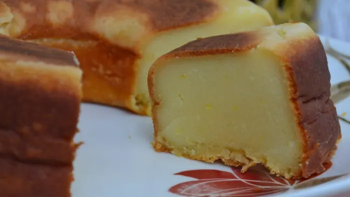

Brazilian Milk Cake
Home

What Is Bolo de Leite?
Bolo de leite is a traditional Brazilian cake that literally translates to
"milk cake"—and for good reason. Milk is the main ingredient, and it is
what helps keep the cake moist and chewy.
The basic recipe calls for just five ingredients that are typically
found in any pantry (not just in Brazil). This cake is a quick go-to
if you want to enjoy something sweet after dinner or when someone decides
to pay you a visit with little to no warning.
You can modify this cake according to your preference;
optional add-ins are listed below the main recipe.
Cook Time
Ready In: 1 hour 10 minutes
Ingredients
Optional Add-Ins
Chocolate chips: If you want your cake to have a hint of chocolate.
Mini Reese's peanut butter cups are an add-on I love, but I only use add them
when I'm in North America (they're way too expensive and hard to find in Brazil).
Cinnamon: Add it to enhance your cake's smell and to help make
your house smell like a bakery!
Coconut: Coconut is a good idea if a simple milk cake is a bit
too boring for you. Some shredded coconut in the batter and some on top can easily
transform this dessert into a coconut cake.
Condensed milk/dulce de leche: Pour a bit on top of your
'bolo de leite' to decorate it when it's done baking. Designs/words/images
are also possible if you're artistic.